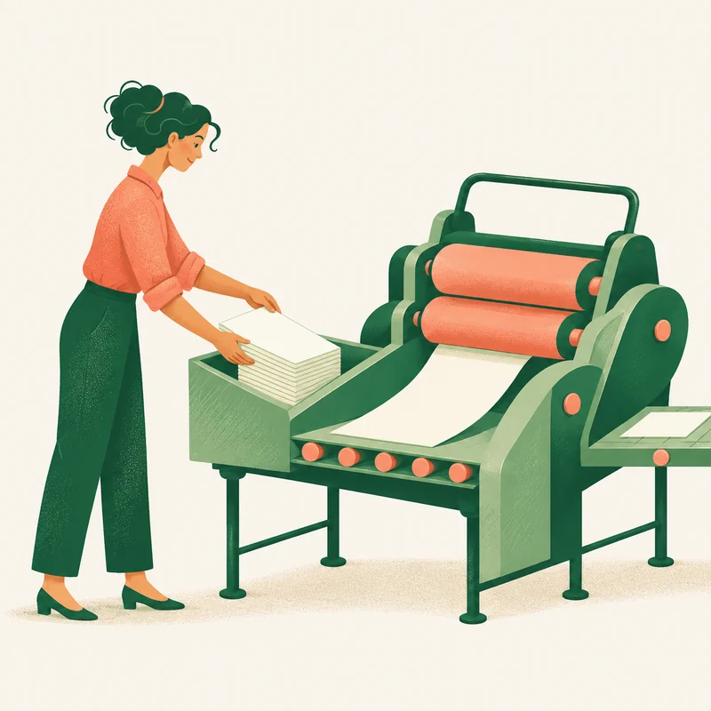
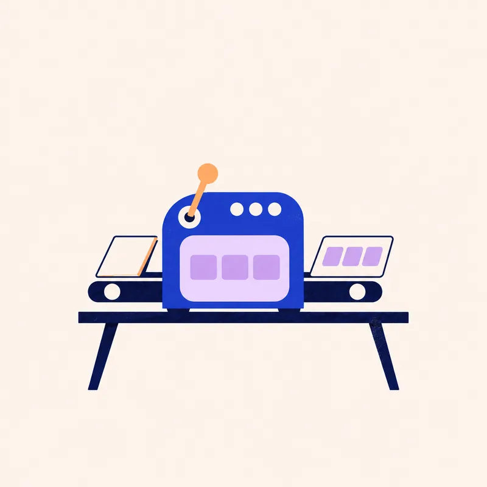
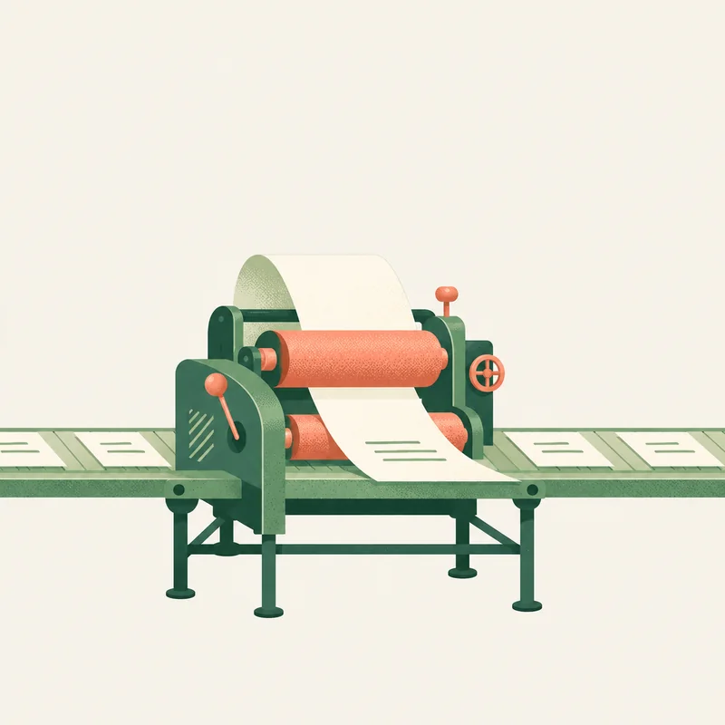
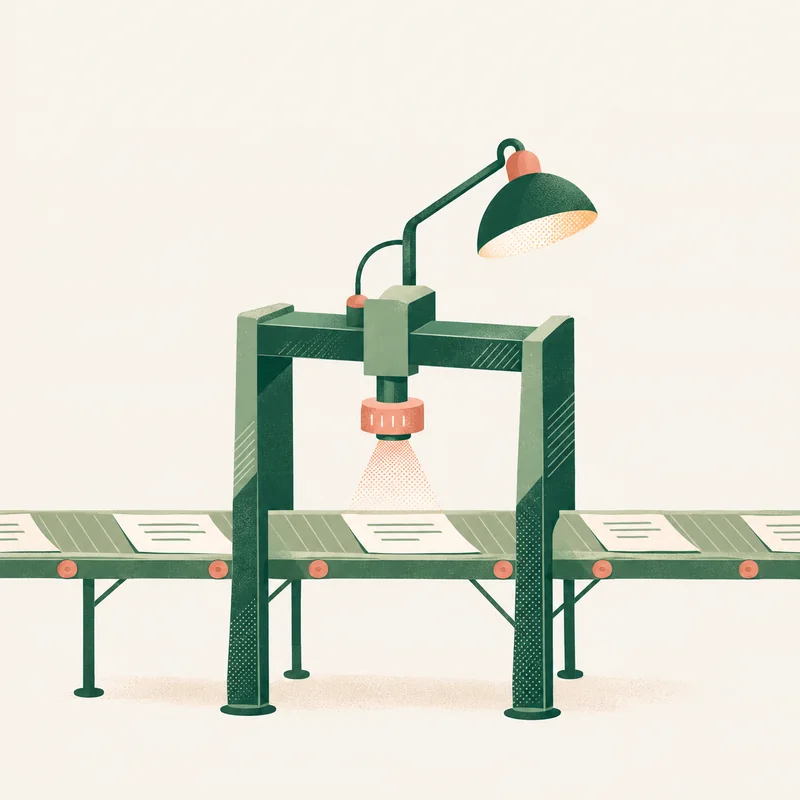

Live online course
Build your AI factory
Code is the first thing AI made cheap. The other work we do hasn’t caught up. Over three weeks, you (and your team) design and implement your own opinionated AI factory.
From the architects of the UK Foreign Office’s award-winning AI service

- Format
- 3-week course, live online
- Starts
- Week of 23 November
- Each week
- A teaching session and a seminar
- Included
- Recordings and a private Discord
Code got cheap. Everything around it didn’t.
Code is the first thing AI made cheap. The other work we do hasn’t caught up.
- For engineers: how can we standardise the way we use AI to architect, review, test and release our work?
- For the rest of the team: how can we standardise the way we use AI in product, design, user research and content?
Friction now lies everywhere outside of writing code.
An AI factory gives you one place to bring all of your work together, powered by AI. You decide once how each kind of work gets done, and standardise it across your team and agents. Over three weeks, you (and your team) design and implement your own opinionated factory, moving up one loop of abstraction with each session.
And it doesn’t stop after the last session. You join a private Discord community with the rest of your group and with us, to share what you build, ask questions and keep going.

You add a ticketIt lands in the work queue, with what done looks like.

Picks it upA heartbeat finds it and starts an agent in a fresh environment.

Does the workOff your laptop, and never straight onto your main code.

ChecksTests and an AI reviewer check the exact change, not the agent’s word for it.
- You review
It comes back in the shape you agreed. You approve it or send it back.
Something failed? The work is blocked with the reason, and the factory learns from it.
What you’ll learn
Think in factories
- Hand agents outcomes, not steps
- Define what done looks like
- Sort work into automated, semi-automated and interactive
Get it off your laptop
- A work queue: a board or a plain text file
- A heartbeat that picks up new work
- A fresh environment for every ticket that needs it
Standard shapes for work
- What good work looks like
- Standardising how we do things across the team
- How agents show you designs and changes
Review you can trust
- Tests and AI review on the exact change
- When to read all the code, and when not to
- When to step in, and when AI can work unobserved
Only solve a problem once
- A retro after every run
- Each failure becomes a rule, a check or a skill
- Feedback loops so agents catch their own mistakes
A factory that improves itself
- Find problems and fixes automatically
- Trial new checks quietly before they block work
- Written rules for when work needs more autonomy
Who this is for
- Engineers and tech leadswho already use coding agents. You move from directing every step to running a factory, and you decide where your attention goes.
- Product, design, user research and contentin modern product teams. You decide how your work enters the factory, and what comes back to you for review.
- Heads of engineering and productwho want the whole team working one way with AI, instead of everyone solving the same problems on their own.
Best as a team. The point is to agree one way of working, so it helps to come with the people you build with.
Not for you if you want a no-code automation course, a tour of every AI tool, or a ready-made factory to install without changing how you work.
What’s included
- Three live teaching sessionsOnline, one a week for three weeks
- Three live interactive seminarsWe work on your factories together, each week
- RecordingsOf the teaching and all the live sessions
- A GitHub repositoryWith a minimum factory specification to build from
- TemplatesTickets, design notes and change reports, ready to adapt for your team
- Your factory mapOne page: what runs where, and where a person steps in
- A private Discord communityStay in touch with the group and with us after the workshop
- Limited placesSo you get real one-to-one help
- Our guaranteeIf you’re unsatisfied, we refund you in full
Syllabus
3 weeks3 teaching sessions3 interactive seminarsStarts the week of Monday 23 November
Week 1Fundamentals of a factory
- Week of 23 NovA work queue, a heartbeat, and your factory running off your laptop. Which work runs automatically, which needs your approval, and which you do together with an agent.Teaching
- Same weekSeminar: set up your work queue and heartbeat togetherSeminar
- TakeawayAn agent that automatically picks up ticketsOutcome
Week 2Standardise how you work
- Week 2Tickets, design, review and release. When should you step in, and when is it OK for the AI to work unobserved?Teaching
- Same weekSeminar: write your team’s standards and wire them into your factorySeminar
- TakeawayA factory that runs without you and captures your attention when it needs youOutcome
Week 3Self-improving factories
- Week 3Retros, checks and rules. Only ever solve a problem once, and let the factory find problems and ways to fix them.Teaching
- Same weekSeminar: run a retro on your factory and turn what you find into rulesSeminar
- TakeawayA factory that gets better over timeOutcome
Who teaches it

Fifteen years as a university lecturer in computer science, then the designer and builder of the UK Government’s first public-facing AI service, for the Foreign Office. It won the Digital Leaders AI Excellence Award 2025. He spends his week between building AI and helping people who don’t write code use it.
Has worked with


What people say about David’s teaching
“David and team run engaging, innovative and high-impact hackathons. We could feel the enthusiasm in the room and confidence and capability being built.”
“This isn’t change management, it’s EQ and IQ, giving people the confidence to try things and feel comfortable with AI.”
“He moves effortlessly between board-level strategy and the technical detail of how things actually get built.”
Frequently asked questions
Do I need to be able to code?
No, but it helps. The factory is built around a software team, and engineers will want to be hands-on building it. AI agents can now handle a lot of the code, though, so if you don’t code you can still take part fully; it just limits how deep into the technical detail you go. The course is planned for the whole multidisciplinary team. Product, design, user research and content people will get real value from it, even though the tools are more mature for software engineering than for the other disciplines today.
What should I bring?
A way to run AI agents: a coding agent such as Claude Code, Codex, OpenCode, Pi or Hermes, with a subscription or access to a capable model. If you want your factory to run without you, you also need somewhere for it to run, in the cloud or on another computer. Even an old laptop will do.
Can I bring my team?
Yes, and it works best that way: the point is to agree one way of working. We offer discounts for whole teams, so talk to us.
Is it recorded, and what if I miss a session?
We record the teaching and all the live sessions, and send them to you after each one. If you miss a session, you can catch up.
What if our code or work is confidential?
Your factory runs on your own accounts, inside what your organisation already allows. If you need to, bring a copy with anything sensitive taken out. On request, we can also run the course in person on your premises, or inside your own environment.